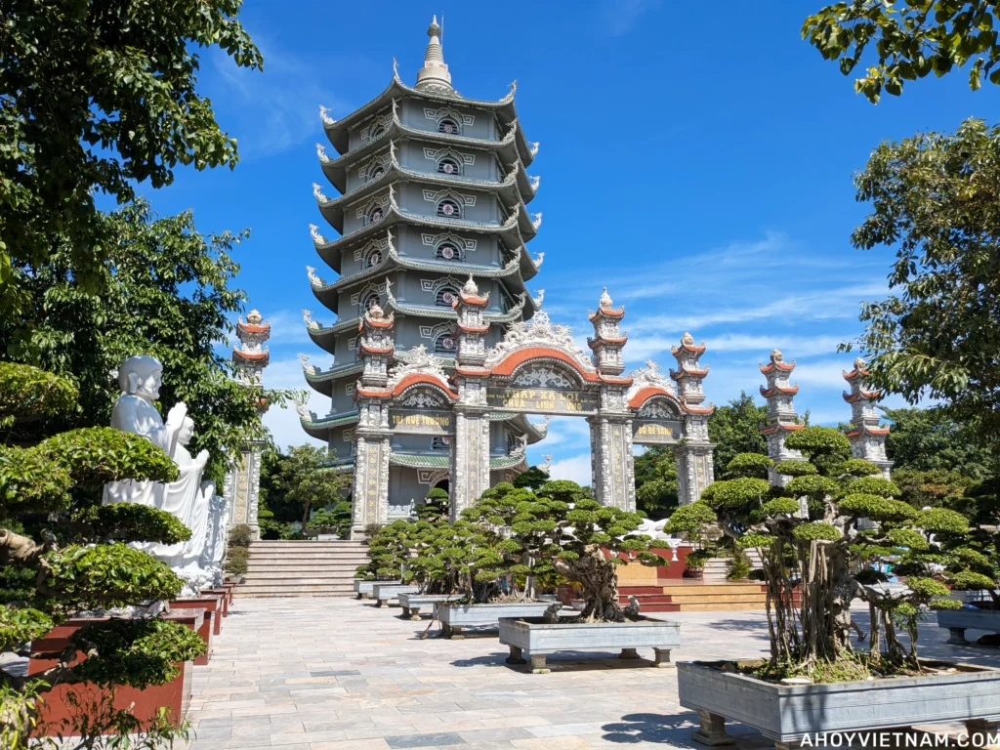
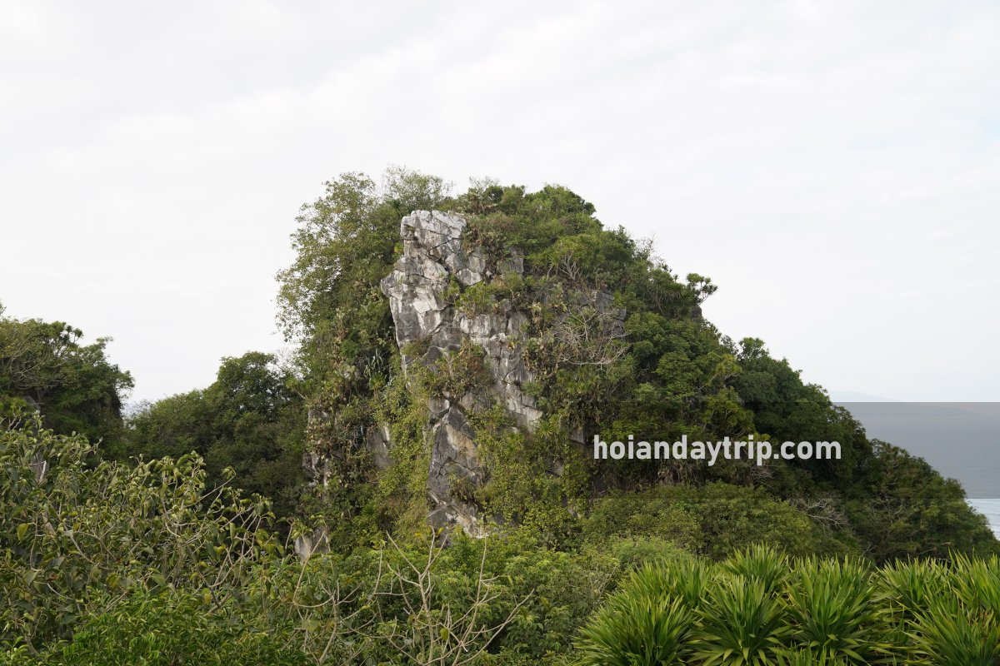
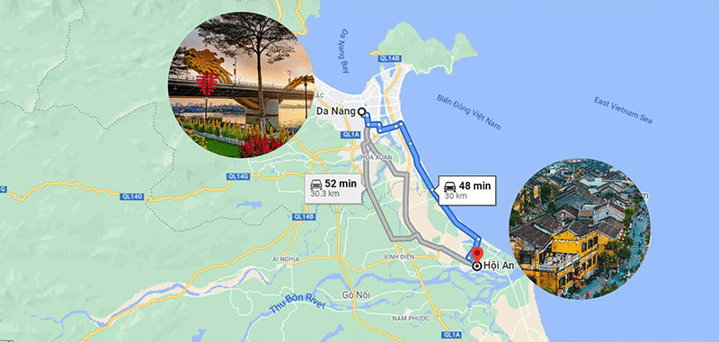
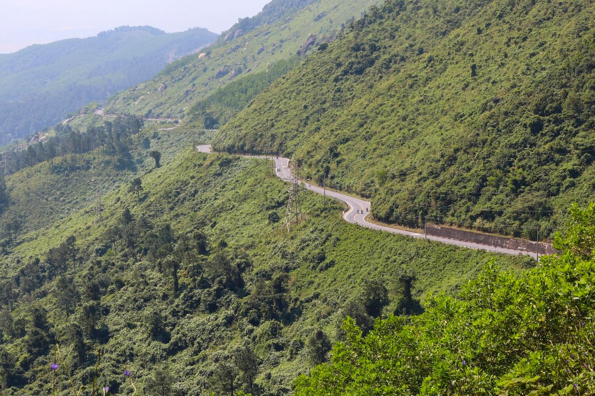
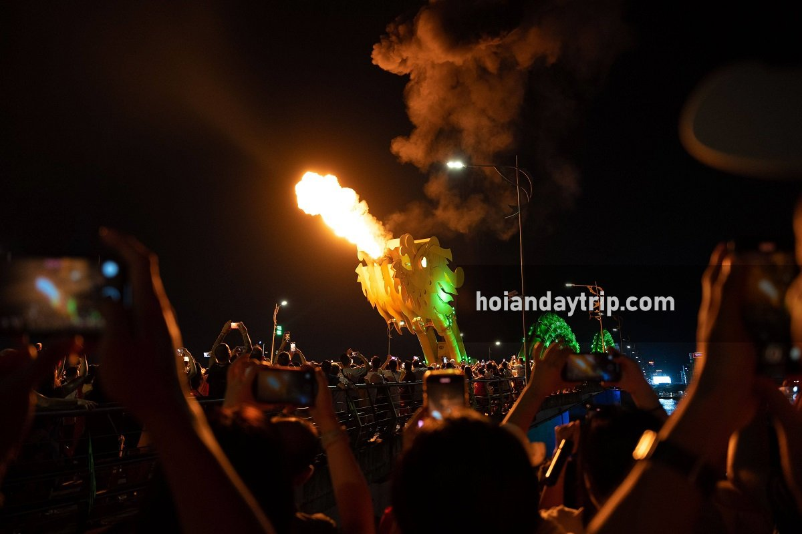
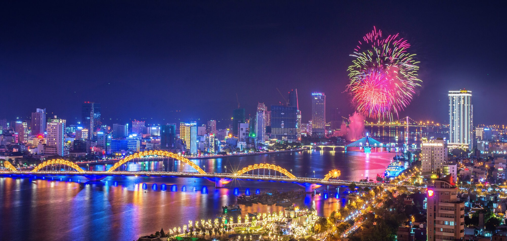
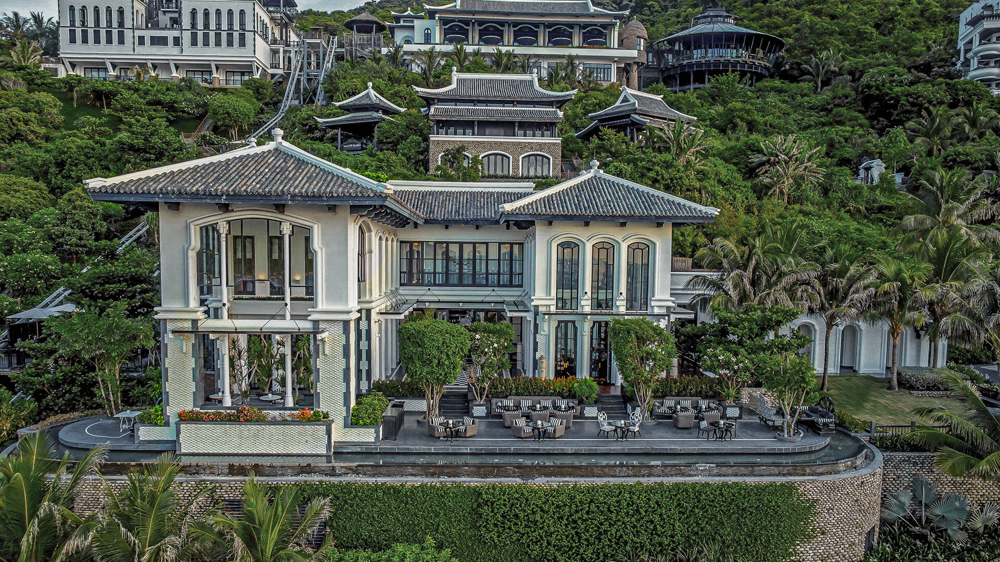

48-hour field scout. Base: Da Nang city center. Anchor dinner: La Maison 1888, Son Trà Peninsula (Saturday evening, 18:30 service). Activities scoped to city + day-trips ≤35 km, with longer options noted. Distances from Han River bridge.
One day: Hoi An late-afternoon → Dragon Bridge fire show 21:00. Two days: add Son Trà loop (Lady Buddha + douc spotting + beach). Three days+: Ba Na Hills or Hai Van Pass ride. Jun–Jul 2026: DIFF fireworks run 30 May – 11 Jul — book Han River cruise 2 weeks ahead, sells out. Skip: Sun Wheel / Asia Park — permanently closed 3 Sep 2025.
French Gothic church painted cotton-candy pink, 1923. Rooster weathervane. The shot window is 07:30–08:30 AM — warm light on the façade, crowd-free on weekdays. Tran Phu St, Hai Chau district; walk from Han Market.
World's largest Champa artifact collection — stone gods, lotus altars, nagas and Vietnamese National Treasures spanning the 5th–15th century. The one essential indoor stop in Da Nang. Pair with My Son (Scene 06b) if the Cham iconography interests you.
Three bridge spectacles on one 2 km riverside walk. Dragon Bridge: 4-headed gold beast with LED scales. Thuan Phuoc: Vietnam's longest suspension bridge (~2 km), dramatic at the river mouth. Han River swing bridge: 487.7 m, rotates 90° ~midnight — Vietnam's only working swing bridge.

Vietnam's tallest Lady Buddha at 67 m — white marble colossus above the South China Sea. The pagoda terrace gives the definitive Da Nang panorama: city skyline, My Khe beach strip, and the Marble Mountains in a single frame. 17 shrine floors inside the statue. Route reopened Sep 2025 after a 3-year closure. [15][16]
Son Trà holds >1,300 red-shanked douc langurs — the world's largest urban population of this endangered primate. Crimson legs, grey torso, powder-blue eye-patches. National Geographic called them the "finest-dressed primates on Earth." Best odds: sunrise, Feb–Aug dry season, Tien Sa–Suoi Om–Ban Co trail. [47]

Five limestone karsts rising from the coast road. Huyen Khong Cave: a war-era field hospital lit by a natural skylight. Am Phu "Hell" Cave: tunnel of painted demons. The summit elevator gives the Da Nang coastline panorama before the heat builds. [29]

UNESCO old town, ochre-yellow walls, Thu Bon River. The lantern hour is 18:00–20:00 — thousands of silk lanterns light the canal after sundown, traffic closed to vehicles. On the 14th of the lunar month, the Full Moon Festival closes the whole ancient town to vehicles 18:00–22:00. [20][21]

The Golden Bridge: 150 m span held by two giant stone hands above the cloud forest — the most-photographed structure in Vietnam since 2018. Ride the world's longest non-stop single-track cable car (5,801 m Guinness record) to get there. [22][64]

21 km of coastal switchbacks across the Hai Van range — declared one of the world's greatest coastal roads by Top Gear's 2008 Vietnam Special. The summit (496 m) gives unbroken views of Da Nang Bay south and Lang Co lagoon north. Each bend is a different frame. [26]

4 bursts of fire + 3 water sprays from the dragon's mouth — 15 minutes of pyrotechnics over the Han River every Friday, Saturday, and Sunday at 21:00. The Tran Hung Dao riverside promenade is the standard vantage point; arrive 30 minutes early for a front-row position. Sky36 at the Novotel (36th floor) frames the full bridge from above. [1]

Da Nang International Fireworks Festival 2026 — 10 teams from 9 countries compete in 6 pairing nights over the Han River Port. DIFF 2026 runs 30 May – 11 July 2026. Grand Final: 11 July. Schedule: Vietnam vs China (30 May), France vs Vietnam Z21 (6 Jun), Japan vs Italy (13 Jun), Germany vs Macau (20 Jun), Australia vs Portugal (27 Jun). [71][72]

Central Vietnam's only Michelin 1-star restaurant — retained 2025, one of nine nationwide. French-Indochine colonial mansion by Bill Bensley: black-and-white yin-yang palette, floor-to-ceiling windows over Bai Bac cove. Under patronage of Michelin chef Christian Le Squer; signature Spaghetti Debout (black truffle, ham, tableside chanterelle cream). [31][33]
Shot Log — All 12 Scenes
| # | Location | Type · Light | Distance | Cost | Booking |
|---|---|---|---|---|---|
| 01 | Da Nang Cathedral | EXT · DAWN | City center | FREE | No — Mon–Sat only |
| 02 | Cham Sculpture Museum | INT · DAY | City center | 60k VND | No |
| 03 | Han River Promenade | EXT · NIGHT | City center | FREE | No |
| 04 | Linh Ung + Lady Buddha | EXT · DAY | 10 km NE | FREE | No — manual vehicle only |
| 05 | Red-Shanked Douc Langurs | EXT · DAWN | Son Trà | FREE | No — sunrise timing |
| 06 | Marble Mountains | EXT/INT · DAY | 12 km S | 40k + 15k lift | No |
| 07 | Hoi An Ancient Town | EXT · DUSK | 30 km S | 120k VND | No — arrive 16:00 |
| 08 | Ba Na Hills + Golden Bridge | EXT · DAY | 35 km W | 1,000k VND | Optional pre-book |
| 09 | Hai Van Pass | EXT · DAY | 25 km N to base | ~€50–52 guided | Book Easy Rider in advance |
| 10 | Dragon Bridge Fire Show | EXT · NIGHT | City center | FREE | Arrive 30 min early (Fri/Sat/Sun 21:00) |
| 11 | DIFF 2026 Fireworks | EXT · NIGHT | Han River Port | 130k–5M VND | MUST BOOK — 6 nights, sells out |
| 12 | La Maison 1888 | INT · NIGHT | Son Trà, 25 min | Set menu + 1M VND deposit | MUST BOOK — direct with restaurant |